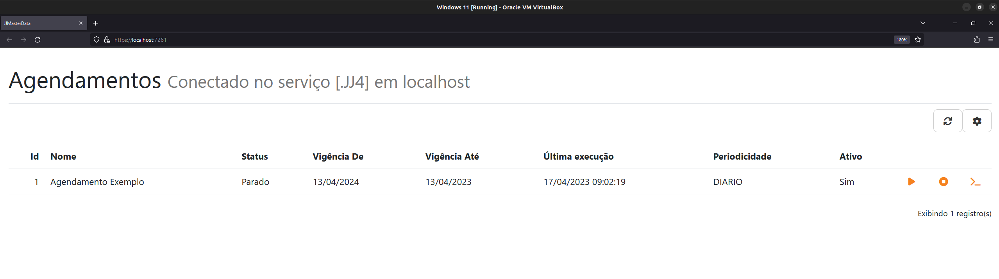

Adicionando o WebClient em sua aplicação ASP.NET Core 7.0+
O JJIntegration possui um client Web com suporte a execução de agendamentos e visualização de logs.
Instalação
- Adicione em seu arquivo
.csprojuma referência ao WebClient. É necessário também adicionar o arquivoNuGet.configà solution. Consulte a seção de plugins para mais informações.
<PackageReference Include="JJIntegration.WebClient" Version="1.0.2" >
- Em seu arquivo
Program.cs, adicione as seguintes linhas:
builder.Services.AddJJIntegrationWebClient(builder.Configuration.GetSection("JJIntegration"));
///...
app.MapJJIntegrationWebClient() //É possível no retorno desse método adicionar .RequireAuthorization()
- Acesse a rota /JJIntegration em sua aplicação Web.

Configuração
É possível configurar sua conexão a um servidor do JJIntegration de duas maneiras:
IConfiguration
Na sua IConfiguration source (normalmente o arquivo appsettings.json) é possível configurar sua conexão na section JJIntegration.
"JJIntegration": {
"Server": "localhost",
"Port": "9092",
"Login": "login",
"Password": "password"
}
Para realizar de integração de segurança com o ReportPortal acrecente a seguinte configuração na raiz no appsettings:
"Authentication" : "ReportPortal"
QueryString
É possível mudar dinâmicamente sua conexão utilizando a QueryString de sua requisição.
O usuário e senha devem ser os mesmos entre diferentes conexões e passados em sua IConfiguration source
Exemplo:
https://localhost:80/JJIntegration?server=localhost&port=9092